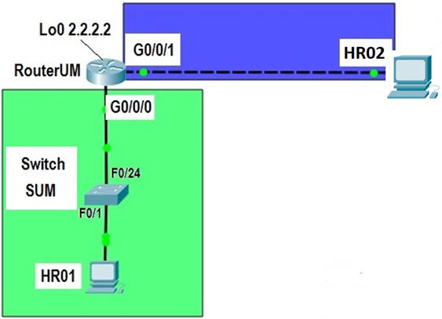

.

Objetivo:
- Realizar la configuración básica de equipos de
interconexión de una red de cobertura local.

Modalidad:
Instrucciones:
- Utiliza la gráfica
incluida en este documento para realizar:
- La configuración del
router y switch.
- Las pruebas de
conectividad necesarias y que permitan verificar la
configuración correcta de los equipos de interconexión, de los
equipos terminales y de los servicios de Telnet en los routers
y el switch.
- Ejecuta la aplicación de
Packet Tracer, y en caso de ser necesario la
cuenta y password de netacad, para realizar el diseño físico de
la siguiente red:

- Utiliza la línea de
comandos de cada equipo de interconexión y realiza la configuración
de acuerdo al documento: Laboratorio1.docx
- Para comprobar la
configuración exitosa de cada equipo de interconexión de esta
práctica, realiza las pruebas de conectividad indicadas en la
descripción del laboratorio.
- Realiza, para cada prueba
de conectividad una impresión de pantalla e inclúyela en el
documento a entregar. Salva la última versión de
tu documento en formato PDF. Esta es la versión final
que subirás como resultado de tu laboratorio.

Recursos:
Especificaciones
de entrega
- Formato de entrega: Un archivo pdf
- Nombre de los entregables: Lab1_matrícula
- Medio de entrega: Se entrega en la sección de Laboratorio
1.
Instrucciones para enviar tus archivos por Canvas:
- Haz clic en la actividad de Laboratorio
1.
- Haz clic en el botón de Entregar
tarea.
- En el fólder de Carga del archivo,
haz clic en el botón de Examinar y localiza el
archivo *.py. Si necesitas agregar más archivos, haz clic en
+Agregue otro archivo, haz clic en el botón de
Examinar y localiza el otro archivo *.py.
- Cuando hayas terminado de subir tus
archivos, haz clic en el botón de Entregar tarea
y
listo!!
|